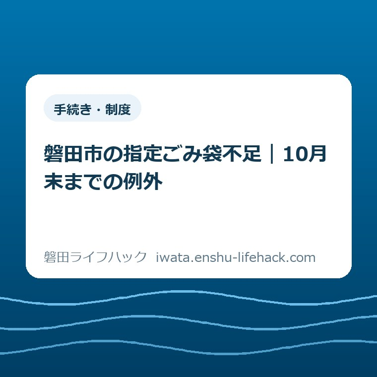
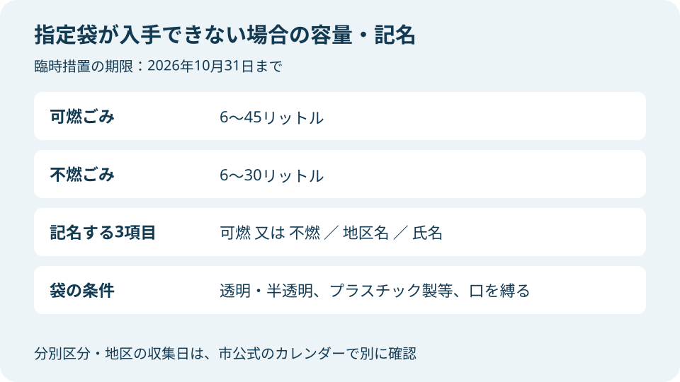
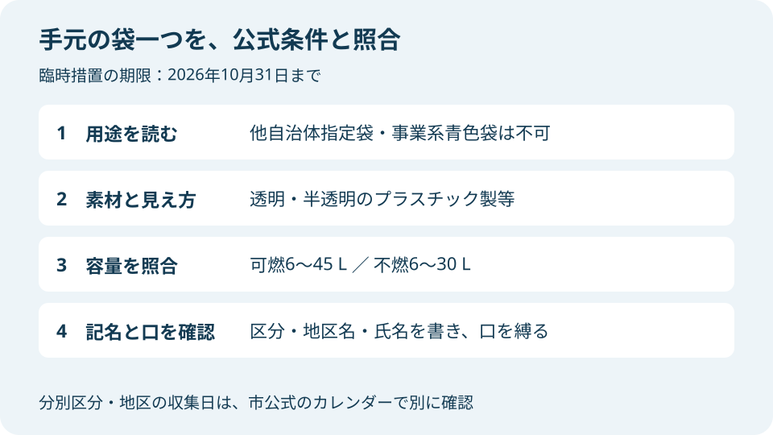

手続き・制度
磐田市の指定ごみ袋不足｜10月末までの例外

Q. 指定袋が買えない。別の袋でごみを出せる？
A. 指定袋が入手できない場合、2026年10月31日までは透明・半透明のプラスチック製等の袋に「可燃」又は「不燃」、地区名、氏名を記入して出せます。可燃6～45L、不燃6～30Lで口を縛ることが条件。他自治体指定袋と事業系青色袋は不可。対象ごみと収集日は磐田市公式で確認してください。
買い回る前に、例外の条件を確かめる
磐田市の指定ごみ袋以外で出せるかは、袋を入手できない事情、出す日、ごみの区分、袋の条件で変わります。2026年10月5日に市公式を確認しました。例外は10月31日までです。袋なら何でも使えるという案内ではありません。
指定袋を探して店を回るのは、ごみ出しに加わった仕事です。仕事帰りの寄り道も、家族に頼む連絡も、時間を使います。見つからなければ、ごみを置く場所や次の収集日も気になる。日々の分別を済ませている人に、買い回る手間がさらに乗っています。
大石浩之（磐田市／不動産業）です。私は今回の案内を、家庭の段取りをどこまで止めずに済むか、という順番で読みたいと考えます。この記事は一般的な分別方法の一覧ではありません。指定袋がないときに使える、期限付きの例外を整理します。
今日の一歩は、家にある袋を一つ取り出し、公式条件に合うか確認することです。別の店へ行く判断はその後でもできます。ただし、買い置きの袋があるだけで適用は決まりません。指定袋が入手できない場合という前提を、袋の条件と一緒に見てください。
臨時措置は2026年10月31日まで、対象は5区分
磐田市「市指定ごみ袋に関する臨時措置延長のお知らせ」は、期間を2026年5月15日から10月31日までとしています。ページ番号1016419、更新日は2026年8月21日です。第5版チラシは8月19日発行で、終期の延長を案内しています。
対象は可燃ごみ、プラスチック、金物・小型電化製品、有害ごみ、埋立ごみの5区分です。すべてを同じ袋にまとめる意味ではありません。対象一覧は袋を代替できる範囲を示しています。家庭で済ませた分別まで変える、と読み替えないでください。
市の案内は、基本は磐田市指定ごみ袋を使うよう求めています。指定袋が手に入らない場合に、条件を満たす別の袋を使うという順序です。指定袋がある家庭まで、一律に別の袋へ切り替える制度ではありません。
10月31日は例外の終了日であって、各地区の収集日ではありません。家で袋詰めした日が期限内でも、そのことだけで期限後に出せるとは判断できません。実際に出す日と地区のカレンダーを、同じタイミングで確かめると混同を防げます。
2026年11月1日以降も延長されるかは、今回確認した案内からはわかりません。次の延長を見込んで別の袋を大量に用意するより、出す前に市公式を開く方が確実です。この記事の投稿日と、市公式の更新日が違う点も見てください。
透明度・容量・記名を別々に照合する
磐田市が示す代替袋は、中身が見える透明又は半透明のプラスチック製やビニール製の袋です。可燃ごみは6～45リットル、不燃ごみは6～30リットル。中身が密閉されるように口を縛り、必要な3項目を記入します。
可燃と不燃で上限が違います。可燃なら45リットルまでという数字を、不燃へ持ち込まないでください。棚に45リットルの袋が一種類あるだけでは、対象ごみすべてに使える袋を確保した状態になりません。容量表示と出すごみを組み合わせて見ます。
記入するのは「可燃」又は「不燃」、「地区名」、「氏名」です。袋の容量を確認しても、記名の代わりにはなりません。袋詰めの担当と運ぶ担当が違う家庭なら、運び出す直前に記名を確かめる工程も必要になります。
「透明ならよい」とだけ覚えると、容量と記名が抜けます。逆に、名前を書けばどんな袋でもよいと思うと、素材や中身の見え方が抜けます。条件は一つを満たせばよい選択式ではありません。使う袋について、項目をそろえる説明です。
市は6リットル袋の目安として、指定袋の小サイズの高さ55cm、幅30cmを示しています。ただし、縦横の寸法だけであらゆる形の袋の容量を断定するのは避けたいところです。商品の容量表示があれば先に読み、判断できない場合は市へ確認します。
口を結ぶための余裕も確認します。容量の上限内でも、ごみがはみ出たり、口を縛れなかったりする袋は使えません。いっぱいに詰めると結べるかどうかが変わります。空の袋での確認と、詰め終わった状態での確認を分けて考えます。

使えない袋は、透明でも例外にならない
磐田市の臨時措置では、他自治体の指定袋と事業系の青色袋は使用できません。色や容量が合いそうでも、この除外条件を飛ばせません。袋に印刷された自治体名や用途を、記名する前に確かめてください。
意外なのは、別の市の指定袋を流用できない点です。引っ越し前に残った袋は、作りが丈夫で使えそうに見えても、今回の例外では対象外です。「他の自治体で指定されているから安心」とは判断できません。
黒色など中身の見えない色付きの袋も使えません。段ボール、米袋、紙袋、布袋など、水分などが染みるものも不可です。家にある入れ物を広く使える措置ではなく、袋の素材と見え方を指定した措置だと読むと、候補を絞れます。
ごみがはみ出るもの、口を縛れない袋も対象外です。上からふたを載せたり、袋の端を軽く折ったりするだけでは、口を縛る条件の代わりになりません。出した後に中身が動くことも想像して、閉じた状態を確かめます。
レジ袋という名前だけでは可否を決められません。中身が見えるか、素材は何か、容量の範囲に入るか、結べるか、除外された用途でないかを見ます。容量が読み取れない袋は、この記事だけで使えると決めず、市へ確認する材料として残します。
袋の例外と、分別・収集日の確認を分ける
指定袋の臨時措置は、袋が手に入らないときの案内です。対象区分が並んでいても、収集カレンダーの代わりにはなりません。磐田市「家庭ごみ分別ガイドブック・収集カレンダー」で、品物の区分と地区の収集日を確かめます。
可燃用として容量を確認した袋に、金物や有害ごみまでまとめて入れる判断はできません。同じ例外の対象に入ることと、一緒に回収されることは別です。袋の確認後も家庭で済ませた分別を崩さない方が、やり直す負担を抑えられます。
プラスチックに出せる品物で迷う場合は、プラマークなし製品を出す前の確認を参考にできます。品物が対象かという問いと、代替袋を使えるかという問いを分けると、袋不足を理由に分別まで自己判断することを防げます。
大きな家具などを片付ける家庭は、今回の対象一覧だけで処分方法を決めないでください。磐田市の粗大ごみを出す前の整理で、袋に入れる話と別の処分経路を確認できます。家の片付けでは、袋の確保と運び出しの手配が別々に必要です。
袋不足への対応と、ごみを減らす工夫も分けたいところです。冷蔵庫の食品ロスを確認する記事は、台所から出るごみを考える別の入口になります。減量のための見直しは、今日出す袋の条件を満たす代わりにはなりません。
良い点——探す以外の段取りが公式に示された
指定袋が入手できない家庭に、条件付きで別の袋を使う道が示された点を、私は評価します。家庭のごみは、店の在庫が戻るまで止まりません。別の袋の条件がわかれば、買い回る以外の選択を検討でき、家で保管する段取りにも見通しが立ちます。
私は、容量、記名、使えない袋が具体的に並んでいる点もよいと考えます。単に「当面は柔軟に対応」と言われるより、家の袋と照合しやすいからです。家族が別々に情報を見ても、同じ項目で確認できる形には実用上の価値があります。
市は指定袋が複数の企業で製造され、例年並みの数量が供給される見込みと案内しています。必要以上の購入を控えるよう求めています。ただし供給の見込みは、特定の店に今日在庫があるという証明ではありません。店ごとの在庫はこの記事では確認していません。
私は、供給の案内と代替袋の条件を一緒に読むと、家庭が必要量を考える助けになると受け止めます。不安だけで大量に確保する前に、次の収集で使う袋を確認できる。臨時措置の良さは、家で次の動きを決めやすくなるところにあります。
注文したい点——残る手間を見落とさない
別の袋を使えるようになっても、容量を調べ、3項目を書き、出す日を確かめる手間は残ります。私は、案内を伝える側が「別の袋でよい」の一言だけで済ませないでほしいと考えます。省略された条件を市民が探し直せば、買い回りとは別の負担が生まれます。
私が望むのは、期限と可燃・不燃の容量差が、案内を目にした場所で一緒に読めることです。これは販売店の掲示状況を調べた結果ではなく、生活の段取りからの要望です。期限の見出しだけが伝わると、使えない袋の条件が後ろに隠れます。
家でごみ出しをする人と、袋を買う人が違う場合もあります。私は、その間で「袋なら何でもよくなった」と伝言が縮むことが気になります。家族への共有は、全文を覚えてもらうより、使う袋と該当条件を一緒に見せる形が扱いやすいと考えます。
氏名や地区名の記入に戸惑う事情があっても、記名を省いてよいという独自の例外は作れません。何を書けばよいか迷う場合は、市の担当へ相談してください。負担を認めることと、条件を曖昧にすることは別です。
対案・結論——今日は手元の袋を一つ確認する
指定袋が入手できない家庭の今日の一歩は、手元の袋一つを公式条件と照合することです。用途、素材、透明度、容量、口を縛れるかを見ます。買い回る前に、使える候補が家にあるかを調べる順番を私は勧めます。
家中の袋を整理し直す必要はありません。次に出すごみの区分に合わせ、一つ選べば足ります。条件に合わなければ、どの項目が不足したかがわかります。買い物や問い合わせで確かめることが、単に「袋がない」より具体的になります。
容量を確認できた袋には、区分に合った「可燃」又は「不燃」、地区名、氏名を記入します。詰め終わったら、はみ出しがないことと、口を縛れることを確かめます。袋の確認が終わってから、地区のカレンダーの該当区分の日へつなげます。
問い合わせるなら、袋の素材、容量表示、中身が見えるか、出したいごみの種類、予定日を伝える準備をします。市公式の問い合わせ先は、ごみ資源循環課の資源循環推進グループ、電話0538-37-4812です。受付時間の案内は午前8時30分～午後5時15分です。
家族へは「この袋をこの区分に使う。日と期限は公式で確認する」と、実物を中心に話すとよいと私は考えます。写真を共有する場合も、記名した個人情報を広く公開する必要はありません。家庭内の段取りに必要な範囲で確認できます。

大石の視点——買い回る時間も家計の負担だ
私は、指定袋を探す時間も家計の負担だと考えます。袋の代金だけを見て「少額だから」と片付けたくありません。寄り道をする人、家で待つ人、代わりに家事を受け持つ人の時間まで使うからです。次の店へ行く前に、手元の袋を確認する。今回、私が勧めたい段取りはこれです。
ただ、どの店でいつ入荷するか、10月末に供給がどうなるかは、私にはわかりません。例外の説明で暮らしの迷いが全部消える、とも言い切れません。容量のわからない袋があるときは、確認する手間と買いに行く手間のどちらが小さいか、家庭ごとに違うと考えます。
それでも、判断材料を先にそろえる意味はあります。例外の期限、使える袋、使えない袋がわかれば、「指定袋がないから何もできない」という状態から一つ進めます。日々の分別の手間を認めたうえで、追加の仕事を一つに絞る。それが生活の言葉で案内する役割だと私は考えます。
よくある質問
指定袋がなくても普通の袋で出せますか？
指定袋が入手できない場合、2026年10月31日までは条件に合う透明・半透明のプラスチック製等の袋を使えます。「可燃」又は「不燃」、地区名、氏名を記入し、可燃6～45L、不燃6～30Lで口を縛ります。対象ごみと最新の条件は磐田市公式で確認してください。
他の市の指定袋や青色の袋を使えますか？
他自治体の指定袋と事業系の青色袋は、今回の臨時措置では使えません。透明度や容量が合いそうでも、この除外条件は別に確認します。黒い袋、紙袋、布袋、口を縛れない袋なども不可です。袋の印刷と素材を確かめ、不明な場合は磐田市の担当へ確認してください。
10月31日までなら何でも同じ日に出せますか？
対象は可燃ごみ、プラスチック、金物・小型電化製品、有害ごみ、埋立ごみです。対象一覧は一緒に出せることを意味しません。分別と地区の収集日は、市の家庭ごみ分別ガイドブック・収集カレンダーで確認してください。11月1日以降も延長されるとは見込まず、出す前に最新案内を確認します。
本記事は非公式の生活案内です。適用条件は袋やごみの状態で変わり、案内が更新される場合もあります。個別の判断は市の担当へ相談し、最後は必ず磐田市公式「市指定ごみ袋に関する臨時措置延長のお知らせ」で最新情報を確認してください。
参考にした公式情報
- 市指定ごみ袋に関する臨時措置延長のお知らせ／磐田市（2026年10月5日確認）
- 臨時措置延長のチラシ第5版／磐田市（2026年10月5日確認）
- 家庭ごみ分別ガイドブック・収集カレンダー／磐田市（2026年10月5日確認）
最終確認日：2026-10-05。制度や個別条件は市公式で確認してください。